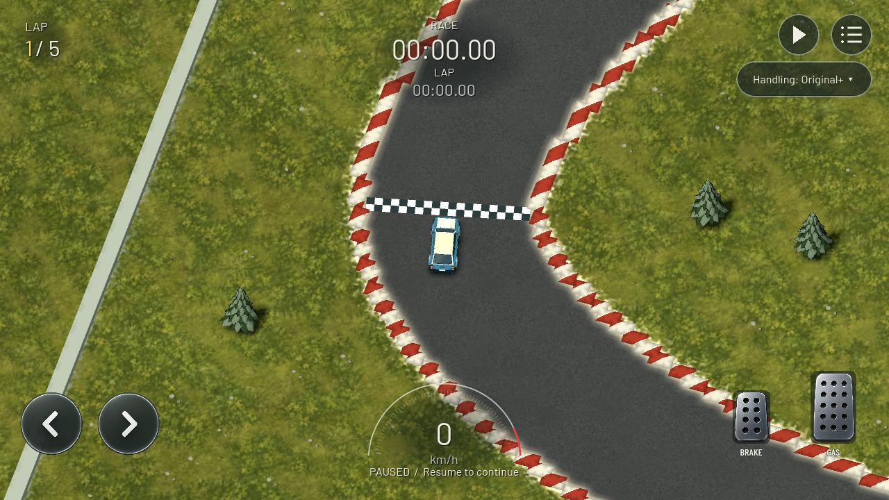
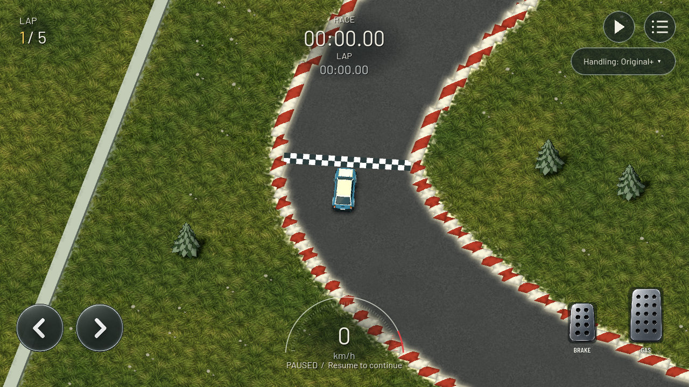

Grass: original material versus meadow material and opaque tufts


New meadow grassOriginal grassDesktop captures at the production camera framing. Roads, camera and handling are identical. Storm rain continues animating between captures. Phone measurements and limits are recorded in the implementation report.